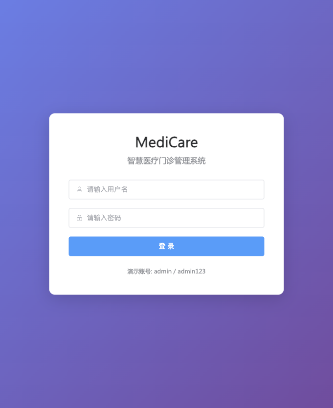
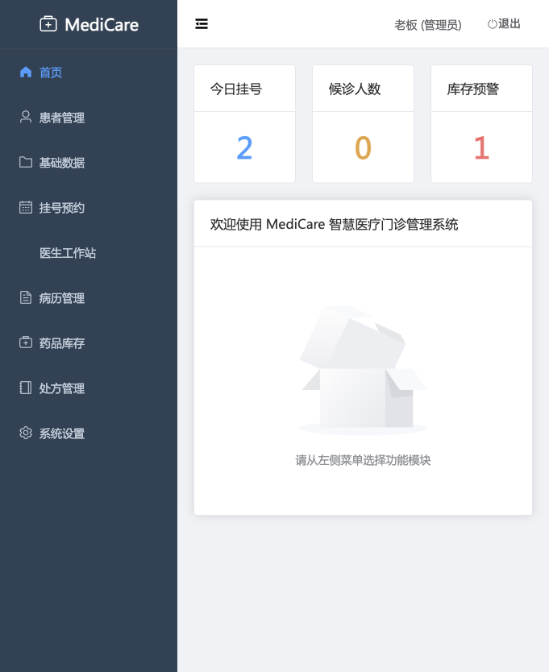
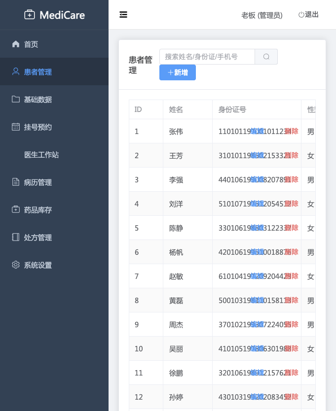
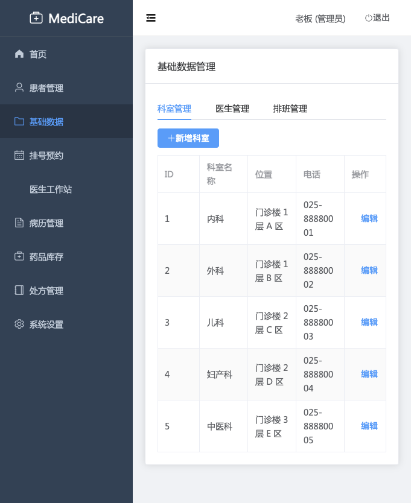
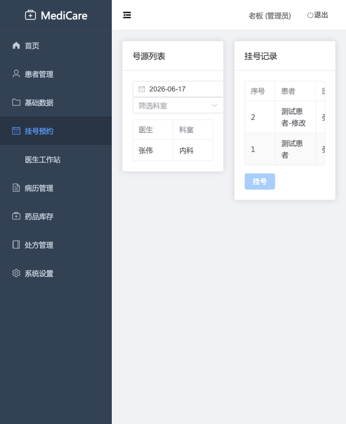
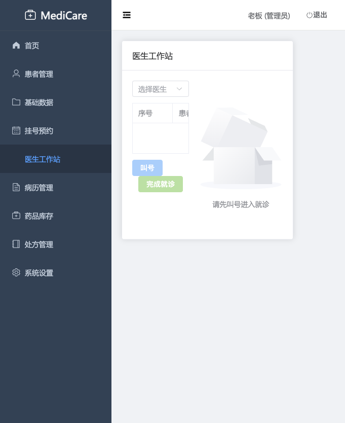
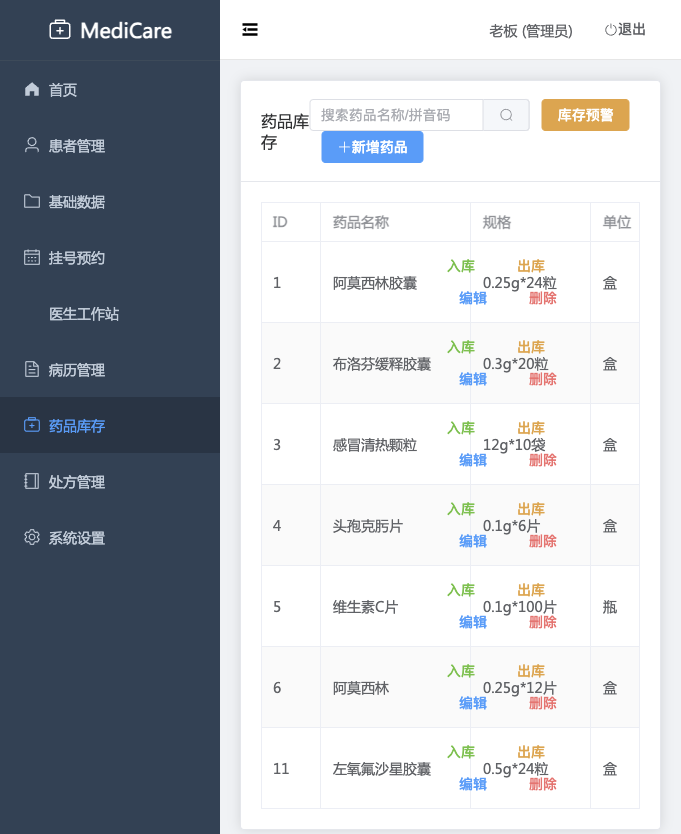
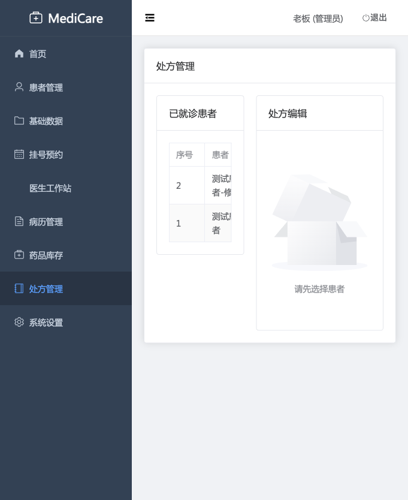
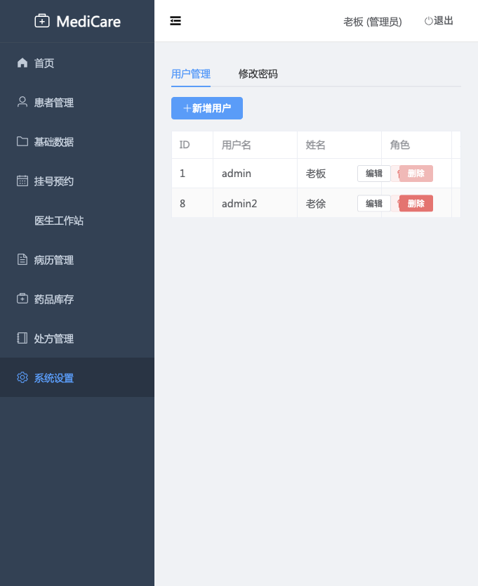

目 录
1. 引言
1.1 编写目的
本文档定义 MediCare 智慧医疗门诊管理系统的软件需求规格，作为系统设计、开发、测试和验收的基准。面向读者包括项目经理、开发工程师、测试工程师和客户代表。
1.2 项目概述
MediCare 是面向基层医疗机构的门诊管理信息系统，覆盖挂号、就诊、处方、药品库存等核心业务流程。系统采用前后端分离架构，前端基于 Vue 3 + Element Plus 构建，后端基于 Spring Boot + Spring Data JPA，数据库使用 MySQL。
1.3 系统范围
系统覆盖以下业务域：
- 患者信息管理 — 患者档案的增删改查与搜索
- 基础数据管理 — 科室、医生、排班的基础维护
- 挂号预约 — 号源查询、挂号、叫号、完成就诊、取消
- 医生工作站 — 叫号接诊、书写病历
- 病历管理 — 门诊病历的创建与更新
- 药品库存 — 药品信息维护、入库/出库、库存预警
- 处方管理 — 开处方、取药、作废处方
- 系统管理 — 用户管理、修改密码
1.4 术语与缩写
| 术语 | 含义 |
|---|---|
| VO (View Object) | 视图对象，用于前端展示的数据结构，包含关联查询的冗余字段 |
| DTO (Data Transfer Object) | 数据传输对象，用于前后端交互的请求/响应结构 |
| CRUD | Create / Read / Update / Delete，增删改查 |
| BCrypt | 密码哈希算法，自带盐值，用于安全存储密码 |
| Session | HTTP 会话，服务端存储用户登录状态 |
| 乐观锁 | 通过版本号/条件判断实现并发控制，避免数据冲突 |
| 原子扣减 | 使用 SQL WHERE 条件（如 WHERE stock >= qty）保证并发安全 |
2. 总体描述
2.1 系统架构
系统采用前后端分离的四层架构：
| 层次 | 技术栈 | 职责 |
|---|---|---|
| 前端展示层 | Vue 3 + Element Plus + Vite | 页面渲染、交互逻辑、路由管理、状态管理 |
| 接口层 | Spring Boot REST Controller | 请求分发、参数校验、权限控制(@RequireRole) |
| 业务逻辑层 | Spring Service + @Transactional | 业务规则校验、事务编排、库存安全扣减 |
| 数据访问层 | Spring Data JPA + MySQL | 实体持久化、原生SQL投影查询、原子操作 |
认证机制：Session + Cookie；权限控制：AOP 切面 + 自定义 @RequireRole 注解。
2.2 用户角色
| 角色 | 角色代码 | 职责范围 |
|---|---|---|
| 管理员 | admin | 全部功能，包括基础数据维护、用户管理、挂号操作 |
| 医生 | doctor | 叫号接诊、病历书写、开处方、查看患者和药品 |
| 药师 | pharmacist | 药品入库/出库、库存预警、取药/作废处方 |
2.3 运行环境
| 项目 | 要求 |
|---|---|
| 操作系统 | macOS / Linux / Windows |
| JDK | 17+ |
| Node.js | 18+ |
| MySQL | 8.0+ |
| 浏览器 | Chrome / Edge / Safari 最新版 |
| 后端端口 | 8080 |
| 前端端口 | 5173（开发模式） |
2.4 设计约束
- 前后端必须分离部署，通过 RESTful API 通信
- 认证采用 Session 机制，前端需设置 withCredentials 携带 Cookie
- 库存扣减必须使用原子操作（WHERE stock >= qty），防止超卖
- 原生 SQL 投影查询必须使用接口投影（Interface Projection），不能用 @Data class
- 密码存储必须使用 BCrypt 加密
3. 功能需求
3.1 认证与授权
3.1.1 功能描述
提供用户登录、登出、获取当前登录用户信息的功能。系统采用 Session + Cookie 机制进行身份认证，通过 AOP 切面校验角色权限。
3.1.2 界面原型

3.1.3 业务流程
3.2 仪表盘
3.2.1 功能描述
首页仪表盘展示门诊当日关键运营指标，帮助管理者快速掌握业务概况。
3.2.2 界面原型

3.3 患者管理
3.3.1 功能描述
管理患者基本信息，包括建档、编辑、删除和搜索。患者是挂号的前置依赖。
3.3.2 界面原型

3.4 基础数据管理
3.4.1 功能描述
管理科室、医生、排班三类基础数据，是挂号和就诊的前置依赖。页面以 Tab 标签页形式呈现三个子模块。
科室管理
医生管理
排班管理
3.4.2 界面原型

3.5 挂号预约
3.5.1 功能描述
挂号是门诊核心流程的起点，连接患者、排班和医生工作站。支持号源查询、挂号、叫号、完成就诊和取消挂号。
3.5.2 界面原型

3.5.3 状态流转
候诊/就诊中 →取消→ 已取消 (3) + 回增号源
3.6 医生工作站
3.6.1 功能描述
医生工作站是门诊就诊的核心工作台，提供叫号、书写病历、开处方的集成工作流。
3.6.2 界面原型

3.7 病历管理
3.7.1 功能描述
病历与挂号为 1:1 关系，一个挂号只能创建一份病历。病历包含主诉、现病史、既往史、体格检查、诊断和医嘱。
3.8 药品库存管理
3.8.1 功能描述
管理药品信息和库存，支持入库、出库和库存预警。药品名称+规格组合唯一。
3.8.2 界面原型

3.9 处方管理
3.9.1 功能描述
处方是连接病历和药品库存的关键环节。医生开处方时自动扣减库存，药师负责取药或作废。
3.9.2 界面原型

3.9.3 状态流转
待缴费/已缴费 →作废→ 已取消 (3) + 回滚库存
3.10 系统设置
3.10.1 功能描述
管理系统用户账号和密码修改。
3.10.2 界面原型

4. 非功能需求
4.1 性能需求
| 编号 | 需求描述 | 指标 |
|---|---|---|
| NFR-PERF-01 | API 平均响应时间 | < 500ms（常规查询） |
| NFR-PERF-02 | 并发挂号防超卖 | 原子操作保证零超卖 |
| NFR-PERF-03 | 处方详情查询 | 批量查询药品信息，避免 N+1 问题 |
4.2 安全需求
| 编号 | 需求描述 |
|---|---|
| NFR-SEC-01 | 密码使用 BCrypt 加密存储，禁止明文 |
| NFR-SEC-02 | API 响应中密码字段必须置空 |
| NFR-SEC-03 | 修改密码需验证旧密码，且只能改自己的 |
| NFR-SEC-04 | 超级管理员 admin 不可删除 |
| NFR-SEC-05 | 500 错误信息脱敏，不泄露堆栈细节 |
| NFR-SEC-06 | 所有受保护接口必须通过 AuthInterceptor 认证 |
| NFR-SEC-07 | 角色权限由 @RequireRole + AOP 切面强制执行 |
4.3 可靠性需求
| 编号 | 需求描述 |
|---|---|
| NFR-REL-01 | 挂号/处方/库存变更操作必须使用事务(@Transactional)，保证原子性 |
| NFR-REL-02 | 库存扣减使用 WHERE stock >= qty 条件更新，防止超卖 |
| NFR-REL-03 | 取消挂号时回增号源在事务内执行 |
| NFR-REL-04 | 作废处方时逐条回滚库存在事务内执行 |
| NFR-REL-05 | 全局异常处理器保证所有异常返回统一 JSON 格式 |
4.4 可维护性需求
| 编号 | 需求描述 |
|---|---|
| NFR-MAINT-01 | 代码采用 Controller → Service → Repository 三层分层架构 |
| NFR-MAINT-02 | 关键业务流程代码包含 Javadoc 注释说明事务边界和状态流转 |
| NFR-MAINT-03 | VO 投影使用接口定义，原生 SQL 可直接映射 |
| NFR-MAINT-04 | 请求体使用 DTO（如 PrescriptionCreateRequest）而非 Map，保证类型安全 |
4.5 兼容性需求
| 编号 | 需求描述 |
|---|---|
| NFR-COMP-01 | 支持 Chrome、Edge、Safari 最新版浏览器 |
| NFR-COMP-02 | 前端开发服务器和后端 API 服务器支持 CORS 跨域 |
| NFR-COMP-03 | 密码验证兼容明文和 BCrypt（迁移过渡期） |
5. 数据需求
5.1 核心数据实体
| 实体 | 核心字段 | 唯一性约束 | 关键关联 |
|---|---|---|---|
| Department | id, name, location, phone | name 唯一 | → Doctor |
| Doctor | id, name, department_id, title, status | — | → Department, → Schedule, → SysUser |
| Schedule | id, doctor_id, work_date, time_slot, total_slots, remain_slots | — | → Doctor, → Registration |
| Patient | id, name, gender, id_card, birth_date, phone, address, allergy_info | id_card 唯一 | → Registration, → MedicalRecord, → Prescription |
| Registration | id, patient_id, schedule_id, doctor_id, seq_no, status, fee | — | → Patient, → Schedule, → MedicalRecord |
| MedicalRecord | id, registration_id, patient_id, doctor_id, chief_complaint, present_illness, past_history, physical_exam, diagnosis, advice | registration_id 唯一 | → Registration, → Prescription |
| Medicine | id, name, spec, unit, price, stock, safety_stock, pinyin_code, manufacturer, status | name+spec 唯一 | → PrescriptionItem, → InventoryLog |
| Prescription | id, record_id, patient_id, doctor_id, total_amount, status | — | → MedicalRecord, → PrescriptionItem |
| PrescriptionItem | id, prescription_id, medicine_id, quantity, dosage, usage_desc, unit_price, amount | — | → Prescription, → Medicine |
| InventoryLog | id, medicine_id, type, quantity, batch_no, expiry_date, operator, remark | — | → Medicine |
| SysUser | id, username, password, real_name, role, status, doctor_id | username 唯一 | → Doctor |
5.2 数据状态码枚举
| 实体 | 状态字段 | 值 | 含义 |
|---|---|---|---|
| Registration | status | 0 | 候诊 |
| 1 | 就诊中 | ||
| 2 | 已完成 | ||
| 3 | 已取消 | ||
| Prescription | status | 0 | 待缴费 |
| 1 | 已缴费 | ||
| 2 | 已取药 | ||
| 3 | 已作废 | ||
| InventoryLog | type | in | 入库 |
| out | 出库 | ||
| SysUser | role | admin / doctor / pharmacist | 管理员 / 医生 / 药师 |
6. 接口需求
6.1 外部接口
| 接口类型 | 协议 | 说明 |
|---|---|---|
| 前端 ↔ 后端 | HTTP REST (JSON) | 前后端通过 RESTful API 交互，前端 Vite 开发服务器代理 /api 到后端 8080 |
| 后端 ↔ 数据库 | MySQL JDBC | Spring Data JPA 管理数据库连接，HikariCP 连接池 |
6.2 API 统一响应格式
| 字段 | 类型 | 说明 |
|---|---|---|
| code | int | 200=成功，400=业务错误，401=未登录，403=禁止，409=冲突，500=服务器错误 |
| message | String | 提示信息 |
| data | T | 业务数据，失败时为 null |
6.3 异常处理策略
| 异常类型 | HTTP 状态码 | code | 说明 |
|---|---|---|---|
| BusinessException | 400 | 400 | 业务逻辑校验失败 |
| MethodArgumentNotValidException | 400 | 400 | @Valid 校验失败，拼接所有字段错误 |
| HttpMessageNotReadableException | 400 | 400 | 请求体格式错误 |
| MissingServletRequestParameterException | 400 | 400 | 缺少必要参数 |
| MethodArgumentTypeMismatchException | 400 | 400 | 参数类型错误 |
| DataIntegrityViolationException | 409 | 409 | 数据约束冲突（唯一键/外键） |
| OptimisticLockException | 409 | 409 | 乐观锁冲突 |
| Exception | 500 | 500 | 兜底异常，信息脱敏仅记录日志 |
6.4 API 模块清单
| 模块 | 基础路径 | 接口数 | 主要操作 |
|---|---|---|---|
| 认证 | /api/auth | 3 | login / logout / current |
| 仪表盘 | /api/dashboard | 1 | stats |
| 患者 | /api/patients | 6 | CRUD + search + page |
| 科室 | /api/departments | 5 | CRUD |
| 医生 | /api/doctors | 5 | CRUD + list with deptName |
| 排班 | /api/schedules | 6 | CRUD + available |
| 挂号 | /api/registrations | 5 | list / register / call / complete / cancel |
| 病历 | /api/medical-records | 5 | list / detail / byRegistration / create / update |
| 药品 | /api/medicines | 8 | CRUD + search + lowStock + stockIn + stockOut |
| 处方 | /api/prescriptions | 6 | list / detail / byRecord / create / dispense / cancel + inventoryLogs |
| 用户 | /api/users | 5 | CRUD + changePassword |
详细 API 文档请参见 api.html